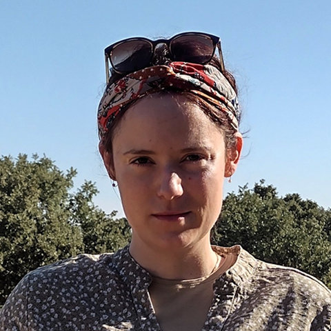

Sara Prata
Principal investigator
IEM – FCSH NOVA University
Sara Prata is an archaeologist and a researcher specialized in rural landscapes, with a particular focus on the early medieval period.
An archaeological analysis of early medieval agricultural practices
ARCHAEMAP is a research project focused on the past, present and future of rural landscapes by using an archaeological interdisciplinary approach.
The research plan is structured around two main questions: 1) How did early medieval communities transform agricultural landscapes? 2) How can this knowledge help reconcile rural development with sustainable land-use practices and heritage protection?
ARCHAEMAP will focus on the first centuries of the early medieval period (5th-8th centuries AD). This is one of the most intense periods of social, political, and economic transformation in Iberia, but very little is known about how these changes impacted the way in which people carried out agricultural activities.
The project brings together spatial analysis, environmental archaeology and 3D modeling to fill in this knowledge gap. Taking the Alto Alentejo as a case-study in an Iberian and European scope, the project benefits from an extensive history of archaeological-led research. Sources will include data from both novel fieldworks and a critical review of legacy data from previous research in the region.
ARCHAEMAP is an 18-month individual R&D project (2026-2028) led by Dr Sara Prata and funded by the Foundation for Science and Technology (FCT) through the RESTART program. It is hosted by the Institute for Medieval Studies (IEM), at the School of Social Sciences and Humanities of NOVA University Lisbon (NOVA FCSH).


Principal investigator
IEM – FCSH NOVA University
Sara Prata is an archaeologist and a researcher specialized in rural landscapes, with a particular focus on the early medieval period.

IEM – FCSH NOVA University
Archaeologist specialized in spatial analysis and heritage visualization.

IEM – FCSH NOVA University
Archaeobotanist dedicated to the evolution of agricultural systems and environmental changes.

IT, Web, 3D
Write to us at